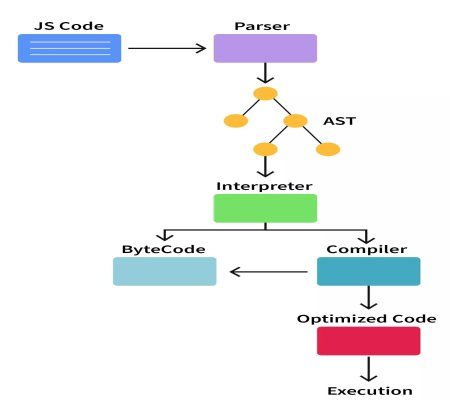

What is Javascript
JavaScript is a scripting or programming language that allows us to implement complex features on web pages
Features Of Javascript
- Cross-platform: Javascript is supported by many OS such as Windows, macOS, Linux, etc.
- Object Oriented: Javascript is an object oriented programming language, but it is not a class based
OOP language like Java, C++, etc.
It is a prototype based OOP language.
Scripting language:
Javascript is a scripting language it depends on the browser for the execution of scripts.
It is mostly used as a client-side scripting language this means that it runs on the client's system (browser)
and handles the webpages displayed to the user and the processing related to it such as cookies, sessions, local
storage.
Dynamically typed:
Javascript is dynamically typed, it means type checks happen at run-time. In JS we don't have to explicitly
declare what type of information will be stored in a variable in advance.
For example when we declare var a, now a can have a string stored in or a number as well.
Case sensitive:
Javascript is sensitive to the case of the letters.
Client Side use of Javascript
- Javascript is mostly used for client side scripting. (Code is run on the client's browser)
- It can be used to modify the webpage's user interface (the browser and its DOM) and make pages interactive.
- It deals with client side processing like cookies, sessions.
- It deals with the storage of the web browser i.e local and session storage.
Server side use of JavaScript
- Javascript can also be used to for server side development. This is possible because of Node.js.
- Node.js is an application runtime environment that allows us to use JavaScript for building server-side
applications.
- We can do things like database queries, network requests, read/write files on the server, running web
servers, interacting with other servers, handling data sent to the server, etc.
- Server side scripting is responsible for showing dynamic content on the webpage.
Javascript can be included in your HTML file in two ways:
Internal JS :
- Internal JS means the javascript code is written in the HTML file itself.
script >
//JS code
< /script>
External JS:
- In external JS, the javascript code is written in another file with the .js extension.
A link to this JS file is added in the HTML file.
- We can do so by using the script tag and adding two attributes type and src, the type attribute has the
value text/javascript" and the src attribute has the path to the JS file.
script type="text/javascript" src="script.js">< /script >
Flow-Chart of Javascript

We will use these three ways to print 'Hello, World!'
- console.log()
- alert()
- document.write()
console.log
script >
console.log("Hello, World!")
< /script>
alert()
script >
alert("Hello, World!")
< /script>
document.write()
script >
document.write("Hello, World!")
< /script>